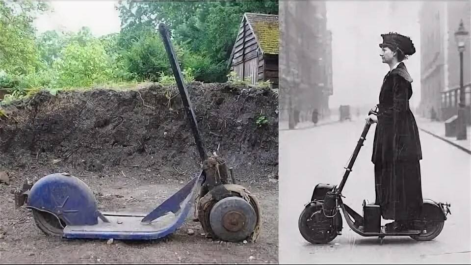
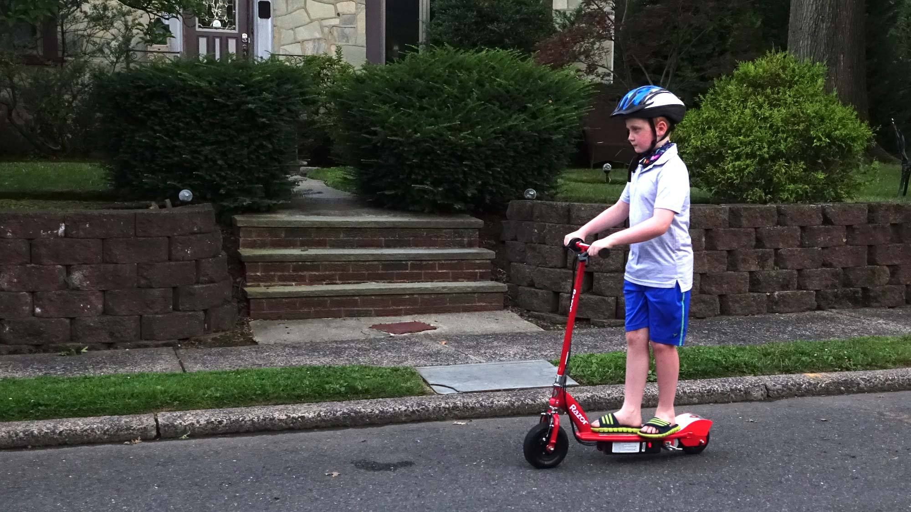
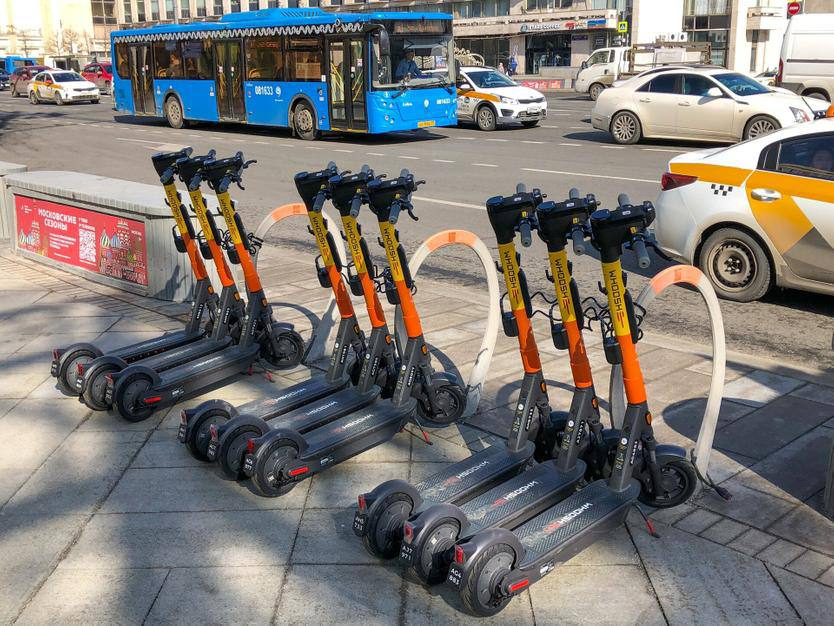
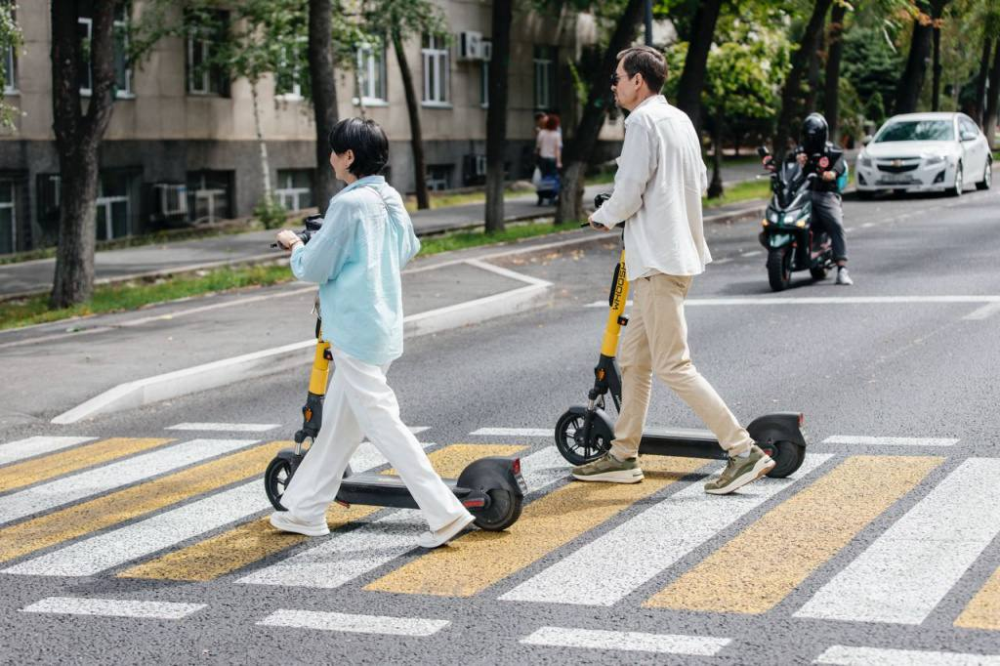
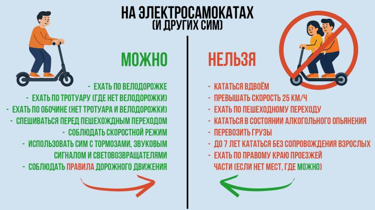

Современный городской транспорт, ставший неотъемлемой частью повседневной мобильности миллионов людей.
Анализ преимуществ, вызовов интеграции в городскую среду и стандартов безопасного использования.
В современных мегаполисах и развивающихся городах проблема транспортной загруженности с каждым годом становится всё более острой.
Электросамокаты и средства индивидуальной мобильности (СИМ) стали эффективной альтернативой личным автомобилям и перегруженному общественному транспорту благодаря своей маневренности и доступности.
Особенно активно данный тренд подхватила молодёжь, формируя новую культуру городского движения.
Стремительное развитие технологий и шеринговых платформ за короткий срок превратило электросамокаты из развлечения в полноценный элемент транспортной экосистемы.
Комплексное изучение особенностей эксплуатации электросамокатов и разработка практических рекомендаций по повышению безопасности на дорогах.

Эволюция технологических решений от первых экспериментальных прототипов до умных шеринговых платформ.

Студенты и подростки составляют ядро аудитории, активно использующее СИМ для ежедневных поездок.

Выделенные велодорожки, станции зарядки и специализированные парковочные зоны меняют облик улиц.

Решение проблемы «последней мили» — быстрый и экологичный способ добраться от метро до работы или дома.
Игнорирование скоростных лимитов и ПДД приводит к увеличению числа аварийных ситуаций с участием пешеходов.
Хаотично оставленный транспорт на тротуарах перекрывает движение и создаёт барьеры для маломобильных граждан.
Эффективность и безопасность использования СИМ напрямую зависят от климатических условий в зимний период.
Нормативная база находится в процессе адаптации, из-за чего правила регулирования сильно разнятся в зависимости от регионов.
